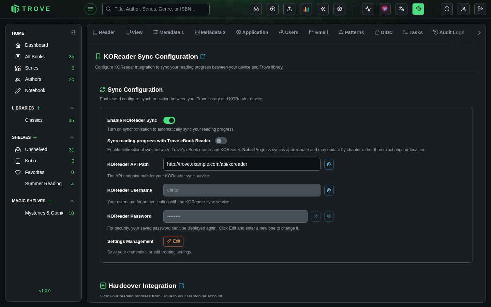
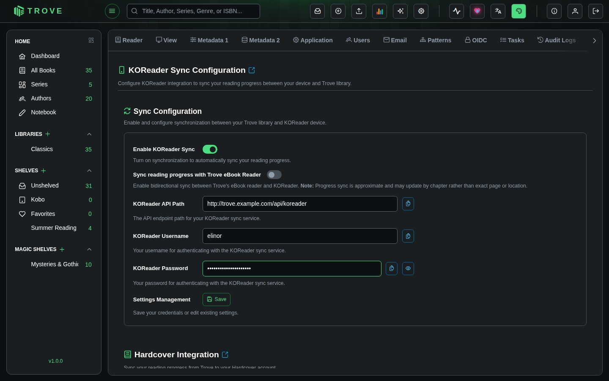
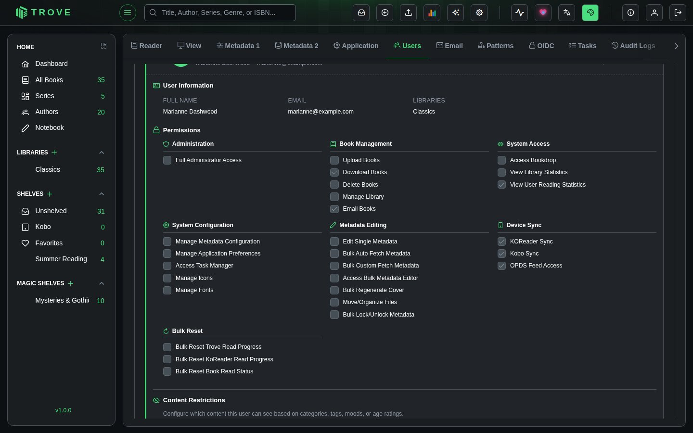
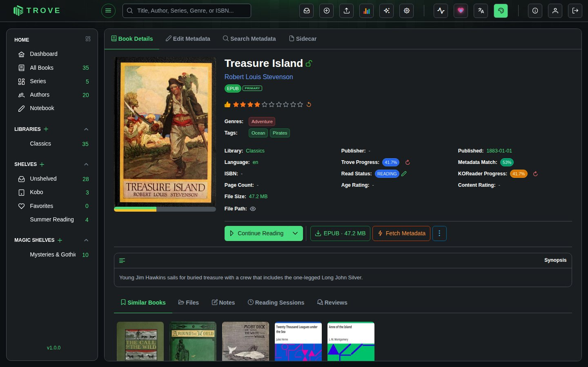

KOReader
KOReader sync lets you push and pull reading progress between KOReader and Trove. Read a few chapters on your e-reader, push the progress, and it shows up in Trove. Pick up on another device, pull the latest position, and continue where you left off.
Trove matches books by file content hash, so the same physical file must exist in both places. In practice this means KOReader needs to have downloaded the book from Trove (typically via OPDS) so the file bytes match. A book sideloaded from a different source won't produce the same hash, and progress won't link up.
Step 1: Configure KOReader Sync in Trove
Go to Settings > Devices in Trove. You'll see the KOReader Settings section with an enable toggle, an API path, and username/password fields.
- Click Edit to unlock the credential fields

- Enter a username and password for KOReader to authenticate with (these are KOReader-specific credentials, separate from your Trove login)
- Click Save
- Toggle Enable KOReader Sync on
- Copy the KOReader API Path shown (for example
http://trove.example.com/api/koreader). You'll need this in KOReader.


Step 2: Set Up Sync in KOReader
Open a book in KOReader to access the tools menu.
- Tap the tools icon (wrench) in the top toolbar, then select Progress sync

- Tap Custom sync server and enter the API path you copied from Trove

- Tap Register / Login, enter the username and password you set in Trove, and tap Login

- You're connected. Use Push progress from this device now to send your current position to Trove, or Pull progress from other devices now to retrieve the latest position from Trove.

- One important setting: tap Document matching method and make sure Binary is selected. This matches books by file content (the same method Trove uses), ensuring the right book gets the right progress.


Viewing Synced Progress
KOReader progress appears on the book's detail page in Trove as KOReader Progress, a percentage in an orange badge.

Click the reset icon next to the KOReader progress to clear it in Trove. This does not affect the reading position stored on your KOReader device.
Troubleshooting
| Problem | What to check |
|---|---|
| Login fails in KOReader | Make sure the username and password match exactly what you set in Trove's Devices settings. These are case-sensitive. Also verify the API path is reachable from your e-reader's network. |
| Progress not appearing in Trove | Tap Push progress from this device now in KOReader after reading. If auto-sync is off, progress doesn't send automatically. |
| Wrong book gets the progress | Make sure Document matching method is set to Binary, not Filename. Binary matches by file content hash, which is what Trove expects. |
| Sideloaded book won't sync | The book file must be byte-identical to the one in Trove. Download it from Trove via OPDS to ensure the hashes match. A file from a different source (even the same title) will have a different hash. |
| API path not accessible | If Trove is behind a reverse proxy, make sure /api/koreader/** paths are forwarded correctly. If using Docker, the API path shown in settings may use a container IP that isn't reachable from your e-reader's network. Use your external hostname or LAN IP instead. |